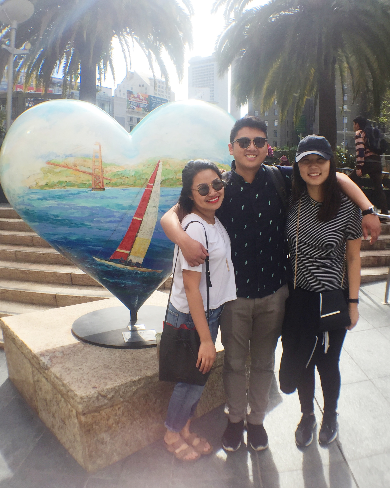

Can you tell this is infront of a BART station?? Celebratory
picture for entering Berkeley successfully.Frolicked around the Embarkadero and Ferry Building for a good
two hours because we found a perfect photospot with shadowplay.Located on Columbus Street, this coffee joint not only brews
amazing espresso but it also serves hot-out-of-the-oven salted chocolate chip cookies.

Good ol' friends Tim and Joanne.The pastry basket was better than the brunch. Yes, it's acclaimed
in Berkeley to be the most authentic French cuisine for brunch but I'm really into singular, strong
tastes like Tapatio (because I'm basic) so it was just "ok."Clarion Alley. Love the intersections of art and activism that is present all around this place
but got shat on because my lip color was "too abrasive." I'll never stop wearing red lipstick.This amazing woman, who has been in my life for the past 3 years
to see me grow as a leader and a human, was the best city companion I could've asked for.